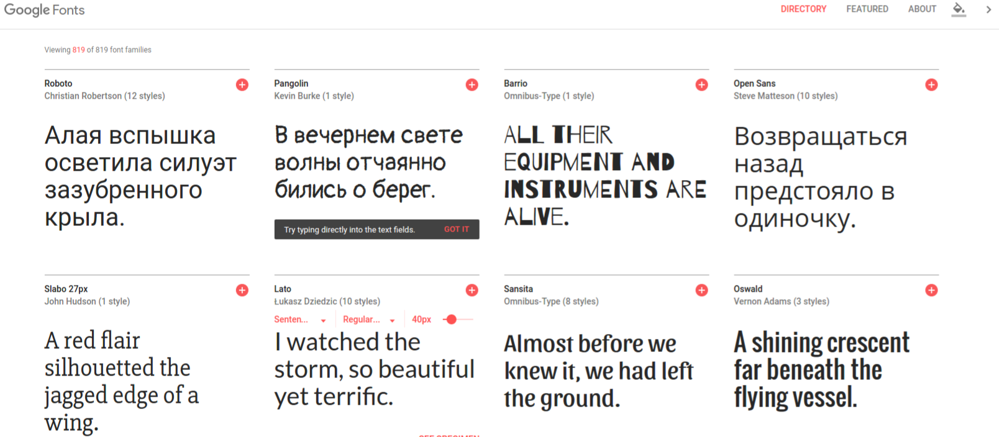
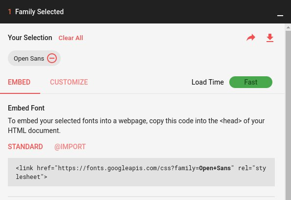
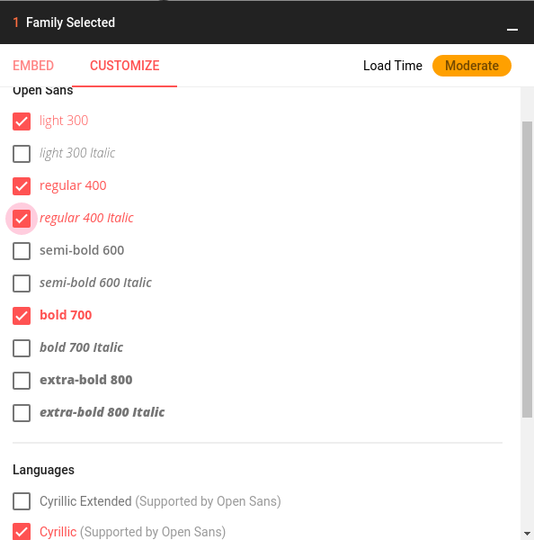

<!DOCTYPE html><!--[if IE 9 ]><html dir="ltr" lang="ru" class="ie9"><![endif]-->
<!--[if (gte IE 9)|(gt IEMobile 7)|!(IEMobile)|!(IE)]><!--><html dir="ltr" lang="en"><!--<![endif]--><head><meta charset="utf-8"><meta name="viewport" content="width=device-width, initial-scale=1, minimum-scale=1.0"><meta name="apple-mobile-web-app-status-bar-style" content="black"><meta name="apple-mobile-web-app-capable" content="yes"><meta name="mobile-web-app-capable" content="yes"><meta name="apple-mobile-web-app-status-bar-style" content="black-translucent"><title>Текст. Семантика, стилизация. Типографика</title><meta name="apple-mobile-web-app-title" content="Текст. Семантика, стилизация. Типографика"><link rel="apple-touch-icon" sizes="60x60" href="/apple-touch-icon-60x60.png"><link rel="apple-touch-icon" sizes="72x72" href="/apple-touch-icon-72x72.png"><link rel="apple-touch-icon" sizes="76x76" href="/apple-touch-icon-76x76.png"><link rel="apple-touch-icon" sizes="114x114" href="/apple-touch-icon-114x114.png"><link rel="apple-touch-icon" sizes="120x120" href="/apple-touch-icon-120x120.png"><link rel="apple-touch-icon" sizes="144x144" href="/apple-touch-icon-144x144.png"><link rel="apple-touch-icon" sizes="152x152" href="/apple-touch-icon-152x152.png"><link rel="apple-touch-icon" sizes="180x180" href="/apple-touch-icon-180x180.png"><link rel="icon" type="image/png" href="/favicon-32x32.png" sizes="32x32"><link rel="icon" type="image/png" href="/android-chrome-192x192.png" sizes="192x192"><link rel="icon" type="image/png" href="/favicon-96x96.png" sizes="96x96"><link rel="icon" type="image/png" href="/favicon-16x16.png" sizes="16x16"><meta name="msapplication-TileColor" content="#c8f2ff"><meta name="msapplication-TileImage" content="/mstile-144x144.png"><meta name="theme-color" content="#69bcd6"><meta property="og:title" content="Noveo University - Обучение в Noveo">
<meta property="og:description" content="Мы предлагаем различные форматы образовательных программ как для студентов технических факультетов, еще только мечтающих о карьере программиста, так и для разработчиков с небольшим стажем работы.">
<meta property="og:image" content="https://university.noveogroup.ru/images/banner.png">
<meta name="description" content="Мы предлагаем различные форматы образовательных программ как для студентов технических факультетов, еще только мечтающих о карьере программиста, так и для разработчиков с небольшим стажем работы."><link rel="stylesheet" href="./static/css/main.css"></head><body><svg style="position: absolute; width: 0; height: 0; overflow: hidden;" version="1.1" xmlns="http://www.w3.org/2000/svg" xmlns:xlink="http://www.w3.org/1999/xlink">
<defs>
<symbol id="icon-filter" viewBox="0 0 22 28">
<title>filter</title>
<path class="path1" d="M21.922 4.609c0.156 0.375 0.078 0.812-0.219 1.094l-7.703 7.703v11.594c0 0.406-0.25 0.766-0.609 0.922-0.125 0.047-0.266 0.078-0.391 0.078-0.266 0-0.516-0.094-0.703-0.297l-4-4c-0.187-0.187-0.297-0.438-0.297-0.703v-7.594l-7.703-7.703c-0.297-0.281-0.375-0.719-0.219-1.094 0.156-0.359 0.516-0.609 0.922-0.609h20c0.406 0 0.766 0.25 0.922 0.609z"></path>
</symbol>
<symbol id="icon-cancel-circle" viewBox="0 0 32 32">
<title>cancel-circle</title>
<path class="path1" d="M16 0c-8.837 0-16 7.163-16 16s7.163 16 16 16 16-7.163 16-16-7.163-16-16-16zM16 29c-7.18 0-13-5.82-13-13s5.82-13 13-13 13 5.82 13 13-5.82 13-13 13z"></path>
<path class="path2" d="M21 8l-5 5-5-5-3 3 5 5-5 5 3 3 5-5 5 5 3-3-5-5 5-5z"></path>
</symbol>
</defs>
<defs>
<symbol id="icon-open-in-new-tab" viewBox="0 0 32 32">
<title>open in new tab</title>
<path class="path1" d="M21.483 27.425h-16.908v-16.908h9.888l4.575-4.575h-18.555c-0.266 0-0.482 0.216-0.482 0.482v25.092c0 0.266 0.216 0.482 0.482 0.482h25.092c0.266 0 0.482-0.216 0.482-0.482v-18.555l-4.575 4.574v9.889z"></path>
<path class="path2" d="M31.859 0.142c-0.111-0.111-0.268-0.161-0.423-0.134l-12.678 2.191c-0.177 0.031-0.323 0.158-0.378 0.329s-0.009 0.36 0.119 0.487l2.988 2.988-7.671 7.671c-0.188 0.188-0.188 0.494 0 0.682l3.829 3.829c0.090 0.090 0.213 0.141 0.341 0.141s0.251-0.051 0.341-0.141l7.671-7.671 2.988 2.988c0.127 0.127 0.315 0.173 0.487 0.119s0.299-0.2 0.329-0.378l2.192-12.677c0.027-0.154-0.023-0.312-0.134-0.423z"></path>
</symbol>
</defs>
</svg><div class="page"><header><div class="view-switcher"><span class="view-switcher__icon"></span><span class="view-switcher__text">Режим слайдов</span></div><h1 class="header-logo-wrap"><a class="header-logo-wrap__logo" href="/"></a><div class="header-logo-wrap__html5">HTML5</div></h1></header><div class="content"><main class="main"><div class="slides-wrap"><div class="slide main-slide"><h1 class="h1 main-slide__theme">Текст. Семантика, стилизация. Типографика</h1><h2 class="main-slide__internship -visible-on-slide">Стажировка HTML5</h2><h3 class="main-slide__autors -visible-on-slide">Дмитрий Мещеряков</h3></div><div class="slide" id="semantics"><h2 class="h2 -subtheme-h">Семантика текста</h2><div class="-centered"><p class="p">Семантика - раздел лингвистики, изучающий смысловое значение единиц языка.</p><p class="p">Семантическая вёрстка, или семантический HTML-код, — это подход к созданию веб-страниц на языке HTML, основанный на использовании HTML-тегов в соответствии с их семантикой (предназначением), а также предполагающий логичную и последовательную иерархию страницы. Он противопоставляется подходу, при котором написание HTML-кода определяется внешним видом веб-страницы.</p><div class="p -remember">Текст - основной контент веб-страниц. Правильная разметка текста и использование подходящих тегов отличает профессионала от дилетанта.</div></div></div><div class="slide"><h2 class="h2 -subtheme-h">Абзацы и заголовки</h2><div class="slide__cols"><div class="slide__col"><p class="p">Абзацы - основные строительные блоки, из которых состоит текст.</p><pre class="line-numbers"><code class="language-html">&lt;p&gt;Абзац — отрезок речи,
состоящий из нескольких предложений.&lt;/p&gt;</code></pre><br></div><div class="slide__col"><div class="-hidden-on-slide"><p class="p">В языке HTML для выделения заголовков предусмотрено целое семейство тегов: от&#x20;<span class="-bold">&lt;h1&gt;</span>&#x20;до&#x20;<span class="-bold">&lt;h6&gt;</span>&#x20;.
Тег&#x20;<span class="-bold">&lt;h1&gt;</span>&#x20;обозначает самый важный заголовок (заголовок верхнего уровня), а тег&#x20;<span class="-bold">&lt;h6&gt;</span>&#x20;обозначает подзаголовок самого нижнего уровня.</p></div><div class="-hidden-on-slide"><p class="p">Чаще всего на практике применяются заголовки&#x20;<span class="-bold">&lt;h1&gt;</span>&#x20;,&#x20;<span class="-bold">&lt;h2&gt;</span>&#x20;и&#x20;<span class="-bold">&lt;h3&gt;</span>&#x20;.</p><p class="p">Не рекомендуется, чтобы на странице содержалось несколько заголовков&#x20;<span class="-bold">&lt;h1&gt;</span>&#x20;.</p><p class="p">При использовании подзаголовков не рекомендуется пропускать уровни заголовков, то есть после заголовка&#x20;<span class="-bold">&lt;h1&gt;</span>&#x20;должен идти подзаголовок&#x20;<span class="-bold">&lt;h2&gt;</span>&#x20;и только потом подзаголовок&#x20;<span class="-bold">&lt;h3&gt;</span>&#x20;.</p></div><div class="-visible-on-slide"><p class="p">6 уровней заголовков:
от&#x20;<span class="-bold">&lt;h1&gt;</span>&#x20;(заголовок верхнего уровня)
до&#x20;<span class="-bold">&lt;h6&gt;</span>&#x20;(заголовок самого нижнего уровня)
.</p></div><h3 class="p">Пример уровней заголовков (статья про CSS на Википедии)</h3><pre class="line-numbers"><code class="language-html">&lt;h1&gt;CSS&lt;/h1&gt;
    &lt;h2&gt;Обзор&lt;/h2&gt;
        &lt;h3&gt;Цель создания CSS&lt;/h3&gt;
        &lt;h3&gt;Способы подключения CSS к док-ту&lt;/h3&gt;
        &lt;h3&gt;Иерархия элементов внутри док-та&lt;/h3&gt;
        &lt;h3&gt;Правила построения CSS&lt;/h3&gt;
            &lt;h4&gt;Виды селекторов&lt;/h4&gt;
                &lt;h5&gt;Универсальный селектор&lt;/h5&gt;
                &lt;h5&gt;Селектор тегов&lt;/h5&gt;
        &lt;h3&gt;Классы и идентификаторы элементов&lt;/h3&gt;
    &lt;h2&gt;CSS-верстка&lt;/h2&gt;
</code></pre></div></div></div><div class="slide"><h2 class="h2 -subtheme-h">Разделители текста</h2><div class="slide__cols"><div class="slide__col"><p class="p">Тег&#x20;<span class="-bold">&lt;br&gt;</span>&#x20;делает перенос строки в тексте, не создавая при этом абзац. Используется, например, в разметке стихов или текстов песен.</p></div><div class="slide__col"><p class="p">Тег&#x20;<span class="-bold">&lt;hr&gt;</span>&#x20;используется для создания горизонтальной линии-разделителя.</p></div></div><div class="-centered"><p class="p">Мороз и солнце; день чудесный!<br>Еще ты дремлешь, друг прелестный -<br>Пора, красавица, проснись:<br>Открой сомкнуты негой взоры<br>Навстречу северной Авроры,<br>Звездою севера явись!<hr></p><p class="p">Вечор, ты помнишь, вьюга злилась,<br>На мутном небе мгла носилась;<br>Луна, как бледное пятно,<br>Сквозь тучи мрачные желтела,<br>И ты печальная сидела -<br>А нынче..... погляди в окно...<hr></p></div></div><div class="slide"><h2 class="h2 -subtheme-h">Теги&#x20;<span class="-bold">&lt;b&gt;</span>&#x20;и&#x20;<span class="-bold">&lt;strong&gt;</span>&#x20;</h2><div class="slide__cols"><div class="slide__col"><p class="p">Тег&#x20;<span class="-bold">&lt;b&gt;</span>&#x20;служит для выделения частей текста с целью обратить внимание читателей (например, ключевые слова в документе, названия продуктов, первый абзац в статье).</p><h3 class="p">Пример</h3><pre class="line-numbers"><code class="language-html">&lt;p&gt;Хотя текст в тегах &lt;b&gt; и &lt;strong&gt;
выглядит одинаково,
&lt;b&gt;(полужирное выделение)&lt;/b&gt;,
смысл у него разный.&lt;/p&gt;</code></pre><p class="p">Хотя текст в тегах&#x20;<span class="-bold">&lt;b&gt;</span>&#x20;и&#x20;<span class="-bold">&lt;strong&gt;</span>&#x20;выглядит одинаково&#x20;<span class="-bold">(полужирное выделение)</span>&#x20;, смысл у него разный.</p><br></div><div class="slide__col"><p class="p">Тег&#x20;<span class="-bold">&lt;strong&gt;</span>&#x20;означает повышенную значимость своего содержимого.</p><h3 class="p">Пример</h3><pre class="line-numbers"><code class="language-html">&lt;p&gt;При разметке текста
&lt;strong&gt;стоит уделять особое внимание
семантике&lt;/strong&gt;&lt;/p&gt;</code></pre><p class="p">При разметке текста&#x20;<strong class="-bold">стоит уделять особое внимание семантике</strong>&#x20;.</p></div></div></div><div class="slide"><h2 class="h2 -subtheme-h">Теги&#x20;<span class="-bold">&lt;i&gt;</span>&#x20;и&#x20;<span class="-bold">&lt;em&gt;</span>&#x20;</h2><div class="slide__cols"><div class="slide__col"><p class="p">Тег&#x20;<span class="-bold">&lt;i&gt;</span>&#x20;содержит текст, выбивающийся из общего окружения, но не имеющий эмоциональной окраски.</p><h3 class="p">Пример</h3><pre class="line-numbers"><code class="language-html">&lt;p&gt;В переводе с латыни изречение
&lt;i&gt;Per aspera ad Astra&lt;/i&gt;
означает «Через тернии к звёздам».&lt;/p&gt;</code></pre><p class="p">В переводе с латыни изречение&#x20;<i class="-italic">Per aspera ad Astra</i>&#x20;означает «Через тернии к звёздам».</p><br></div><div class="slide__col"><p class="p">Тег&#x20;<span class="-bold">&lt;em&gt;</span>&#x20;определяет текст, на который сделан особый акцент, меняющий смысл предложения.</p><h3 class="p">Пример</h3><pre class="line-numbers"><code class="language-html">&lt;p&gt;Казнить &lt;em&gt;нельзя&lt;/em&gt;, помиловать!&lt;/p&gt;</code></pre><p class="p">Казнить&#x20;<em class="-italic">нельзя</em>&#x20;, помиловать!</p></div></div></div><div class="slide"><h2 class="h2 -subtheme-h">Теги&#x20;<span class="-bold">&lt;s&gt;</span>&#x20;и&#x20;<span class="-bold">&lt;del&gt;</span>&#x20;</h2><div class="slide__cols"><div class="slide__col"><p class="p">Тег&#x20;<span class="-bold">&lt;s&gt;</span>&#x20;представляет информацию, которая утратила свою актуальность.</p><h3 class="p">Пример</h3><pre class="line-numbers"><code class="language-html">&lt;p&gt;Купи по цене 999 р. вместо &lt;s&gt;1000 р.&lt;/s&gt;!&lt;/p&gt;</code></pre><p class="p">Купи по цене 999 р. вместо<s>1000 р.</s>!</p><br></div><div class="slide__col"><p class="p">Тег&#x20;<span class="-bold">&lt;del&gt;</span>&#x20;представляет информацию, которая была удалена в новой версии документа.</p><h3 class="p">Пример</h3><pre class="line-numbers"><code class="language-html">&lt;p&gt;В последующих версиях
&lt;del&gt;этот недостаток был удален&lt;/del&gt;.&lt;/p&gt;</code></pre><p class="p">В последующих версиях&#x20;<del>этот недостаток был удален</del>.</p></div></div></div><div class="slide"><h2 class="h2 -subtheme-h">Цитаты</h2><div class="slide__cols"><div class="slide__col"><p class="p">Тег&#x20;<span class="-bold">&lt;q&gt;</span>&#x20;определяет короткую цитату, выделяя ее кавычками.</p><h3 class="p">Пример</h3><pre class="line-numbers"><code class="language-html">&lt;q&gt;Не стыдно не знать - стыдно не учиться.&lt;/q&gt;</code></pre><p class="p"><q>Не стыдно не знать - стыдно не учиться.</q></p><br></div><div class="slide__col"><p class="p">Тег&#x20;<span class="-bold">&lt;blockquote&gt;</span>&#x20;определяет блок с цитатой.</p><p class="p">Тег&#x20;<span class="-bold">&lt;cite&gt;</span>&#x20;используется для выделения источника или автора цитаты.</p><h3 class="p">Пример</h3><pre class="line-numbers"><code class="language-html">&lt;p&gt;В книге &lt;cite&gt;Мастер и Маргарита&lt;/cite&gt;
есть такая цитата:&lt;/p&gt;
&lt;blockquote&gt;Никогда ничего не просите!
Никогда и ничего, и в особенности у тех,
кто сильнее вас. Сами предложат
и сами всё дадут!&lt;/blockquote&gt;</code></pre><p class="p">В книге&#x20;<cite>Мастер и Маргарита</cite>&#x20;есть такая цитата:&#x20;<blockquote style="font-size: 1.3rem;">Никогда ничего не просите! Никогда и ничего, и в особенности у тех, кто сильнее вас. Сами предложат и сами всё дадут!</blockquote></p></div></div></div><div class="slide"><h2 class="h2 -subtheme-h">Выделение текста</h2><div class="-centered"><p class="p">Тег&#x20;<span class="-bold">&lt;mark&gt;</span>&#x20;выделяет текст, на который стоит обратить внимание. В совеременных браузерах подсвечивается желтым цветом.</p><h3 class="p">Пример</h3><pre class="line-numbers"><code class="language-html">&lt;p&gt;Так можно выделить &lt;mark&gt;ключевое слово&lt;/mark&gt;.&lt;/p&gt;</code></pre><p class="p">Так можно выделить&#x20;<mark>ключевое слово</mark>.</p></div></div><div class="slide"><h2 class="h2 -subtheme-h">Преформатированный текст</h2><div class="-centered"><p class="p">Браузер игнорирует пробелы и переносы строк в редакторе кода. Для изменения этого поведения используется тег&#x20;<span class="-bold">&lt;pre&gt;</span>&#x20;.</p><p class="p">Этот тег обозначает "предварительно отформатированный текст". Браузер сохраняет и отображает все пробелы и переносы, которые есть внутри тега&#x20;<span class="-bold">&lt;pre&gt;</span>&#x20;.</p><p class="p">Обычно этот тег используют для отображения примеров кода.</p><h3 class="p">Пример</h3><pre class="line-numbers"><code class="language-html">&lt;pre&gt;В этом     теге    все   пробелы сохранятся&lt;/pre&gt;</code></pre><p class="p"><pre>В этом     теге    все   пробелы сохранятся</pre></p></div></div><div class="slide"><h2 class="h2 -subtheme-h">Тег&#x20;<span class="-bold">&lt;time&gt;</span>&#x20;</h2><div class="-centered"><p class="p">Тег&#x20;<span class="-bold">&lt;time&gt;</span>&#x20;используется для представления либо времени в 24-рехчасовом формате, либо точной даты по Григорианскому календарю (с опциональным указанием времени и часового пояса).</p><p class="p">Этот элемент предназначен для представления дат и времени в машиночитаемом формате. Это облегчает клиентским приложениям добавление событий в календарь пользователя.</p><h3 class="p">Пример</h3><pre class="line-numbers"><code class="language-html">&lt;p&gt;Пост был опубликован
&lt;time datetime=”2017-02-03”&gt;3 февраля 2017 года&lt;/time&gt;.&lt;/p&gt;</code></pre><p class="p">Пост был опубликован&#x20;<time datetime="2017-02-03">3 февраля 2017 года</time>.</p></div></div><div class="slide" id="style"><h2 class="h2 -subtheme-h">Стилизация текста</h2><div class="slide__cols"><div class="slide__col"><h3 class="h3">Свойство font-family</h3><p class="p">Определяет семейство шрифтов.</p><pre class="line-numbers"><code class="language-css">.text {
    font-family: 'Open Sans', Arial, sans-serif;
}</code></pre><div class="-hidden-on-slide"><p class="p">Если название шрифта состоит из одного слова, то оно пишется без кавычек, если из нескольких - то в кавычках.</p><p class="p">Рекомендуется указывать через запятую несколько шрифтов. Если браузер не найдет шрифт, указанный первым, он подключит следующий за ним, и так далее до самого последнего. В конце рекомендуется указывать тип шрифта: serif - шрифт с засечками (Times New Roman), sans-serif - без засечек (Arial, Verdana).</p></div><div class="section"><h3 class="h3">Базовые шрифты - шрифты, доступные во всех операционнах системах:
</h3><ul class="list -unordered"><li class="list__item">Arial;
</li><li class="list__item">Georgia;
</li><li class="list__item">Times New Roman;
</li><li class="list__item">Verdana.
</li></ul></div></div><div class="slide__col"><h3 class="h3">Свойство font-weight</h3><p class="p">Определяет толщину начертания шрифта.</p><pre class="line-numbers"><code class="language-css">.text {
    font-weight: 700;
}</code></pre><div class="section"><h3 class="h3">Свойство font-weight может задаваться:
</h3><ul class="list -unordered"><li class="list__item">ключевыми словами: normal, bold, lighter, bolder;
</li><li class="list__item">числами: от 100 (самый тонкий) до 900 (самый толстый).
</li></ul></div></div></div></div><div class="slide"><h2 class="h2 -subtheme-h -visible-on-slide">Стилизация текста</h2><div class="slide__cols"><div class="slide__col"><h3 class="h3">Свойство font-style</h3><p class="p">Определяет отображение шрифта.</p><pre class="line-numbers"><code class="language-css">.text {
    font-style: italic; /* курсив */
}</code></pre><p class="p">Свойство имеет два основных значения: normal и italic.</p></div><div class="slide__col"><h3 class="h3">Свойство font-size</h3><p class="p">Определяет размер шрифта.</p><p class="p">Размер шрифта обычно задается в px (абсолютная единица измерения), %, em, rem, vh (относительные единицы измерения).</p><p class="p">Размер шрифта может быть задан в пикселях:</p><pre class="line-numbers"><code class="language-css">.text {
    font-size: 16px;
}</code></pre><p class="p" style="font-size: 16px;">Текст высотой 16px.</p></div></div></div><div class="slide"><h2 class="h2 -subtheme-h -visible-on-slide">Стилизация текста</h2><div class="slide__cols"><div class="slide__col"><h3 class="h3 -visible-on-slide">Свойство font-size</h3><p class="p">Размер шрифта может быть задан в em. Размер шрифта в em вычисляется относительно размера шрифта родительского элемента:</p><pre class="line-numbers"><code class="language-css">.parent {
    font-size: 30px;
}
.child {
    font-size: 0.8em;
    /* размер шрифта будет равен 24px */
}</code></pre><div class="parent" style="font-size: 30px;"><p class="p child" style="font-size: 0.8em;">Текст высотой 0.8 em.</p></div></div><div class="slide__col"><p class="p">Размер шрифта может быть задан в rem. Размер шрифта в rem вычисляется относительно корневого элемента страницы (тег html):</p><pre class="line-numbers"><code class="language-css">:root {
    font-size: 2.3vh;
    /* 1vh = 1/100 высоты вьюпорта (экрана) */
}
.text {
    font-size: 1rem;
    /* размер шрифта будет равен 2.3vh */
}</code></pre><p class="p" style="font-size: 1rem;">Текст высотой 1rem.</p></div></div></div><div class="slide"><h2 class="h2 -subtheme-h">Rem или em?</h2><div class="-centered"><div class="p -remember">Рекомендуется задавать размеры текстовых элементов страницы (заголовки, абзацы) в rem, а величину отступов и полей (margin и padding), а также декоративных элементов (например, толщину рамок или радиус скругления) в em.</div></div></div><div class="slide"><h2 class="h2 -subtheme-h -visible-on-slide">Rem или em?</h2><div class="-hidden-on-slide"><p data-height="265" data-theme-id="light" data-slug-hash="OWEjQq" data-default-tab="html,result" data-user="HTML5-Noveo-SU" data-embed-version="2" data-pen-title="[text-semantics-style ] - Rem & Em" class="codepen">See the Pen <a href="http://codepen.io/HTML5-Noveo-SU/pen/OWEjQq/">[text-semantics-style ] - Rem & Em</a> by HTML Five Noveo Software University (<a href="http://codepen.io/HTML5-Noveo-SU">@HTML5-Noveo-SU</a>) on <a href="http://codepen.io">CodePen</a>.</p></div><div class="slide__codepen -visible-on-slide"><div class="slide__codepen-inner"><p data-height="265" data-theme-id="light" data-slug-hash="OWEjQq" data-default-tab="html,result" data-user="HTML5-Noveo-SU" data-embed-version="2" data-pen-title="[text-semantics-style ] - Rem & Em" class="codepen">See the Pen <a href="http://codepen.io/HTML5-Noveo-SU/pen/OWEjQq/">[text-semantics-style ] - Rem & Em</a> by HTML Five Noveo Software University (<a href="http://codepen.io/HTML5-Noveo-SU">@HTML5-Noveo-SU</a>) on <a href="http://codepen.io">CodePen</a>.</p></div></div></div><div class="slide"><h2 class="h2 -subtheme-h -visible-on-slide">Стилизация текста</h2><div class="slide__cols"><div class="slide__col"><h3 class="h3">Свойство color</h3><p class="p">Определяет цвет текста.</p><div class="section"><h3 class="h3">Цвет текста может быть задан в одном из цветовых форматов:
</h3><ul class="list -unordered"><li class="list__item">шестнадцатеричный: #fa452e; #000;
</li><li class="list__item">RGB: rgb(0, 150, 0);
</li><li class="list__item">RGBA: rgba(0, 0, 0, 0.5);
</li><li class="list__item">цветовые константы: red, blue, green...
</li></ul></div></div><div class="slide__col"><h3 class="h3">Свойство line-height</h3><p class="p">Определяет высоту строки.
Может быть задано в px, em, rem, %, безразмерной величиной (например, 1.5).</p><p class="p">Предпочтительнее задавать межстрочный интервал либо множителем, либо в относительных единицах измерения.
</p></div></div></div><div class="slide"><h2 class="h2 -subtheme-h -visible-on-slide">Стилизация текста</h2><div class="slide__cols"><div class="slide__col"><h3 class="h3">Свойство text-transform</h3><p class="p">Определяет регистр символов.</p><div class="section"><h3 class="h3">Значения:
</h3><ul class="list -unordered"><li class="list__item">none; - значение по умолчанию, отменяет изменение регистра;
</li><li class="list__item">lowercase; - все буквы строчные;
</li><li class="list__item">uppercase; - все буквы заглавные;
</li><li class="list__item">capitalize; - каждое слово начинается с большой буквы.
</li></ul></div></div><div class="slide__col"><h3 class="h3">Свойство text-decoration</h3><p class="p">Позволяет добавить тексту декоративное оформление.</p><div class="section"><h3 class="h3">Значения:
</h3><ul class="list -unordered"><li class="list__item">none; - значение по умолчанию, эффектов нет;
</li><li class="list__item">underline; - подчеркивание;
</li><li class="list__item">line-through; - зачеркивание;
</li><li class="list__item">overline; - черта сверху.
</li></ul></div></div></div></div><div class="slide"><h2 class="h2 -subtheme-h -visible-on-slide">Стилизация текста</h2><div class="slide__cols"><div class="slide__col"><h3 class="h3">Свойство text-align</h3><p class="p">Определяет горизонтальное выравнивание текста.</p><div class="section"><h3 class="h3">Значения:
</h3><ul class="list -unordered"><li class="list__item">left; - значение по умолчанию, текст выравнивается по левому краю;
</li><li class="list__item">right; - текст выравнивается по правому краю;
</li><li class="list__item">center; - текст выравнивается по центру;
</li><li class="list__item">justify; - текст растягивается по всей ширине контейнера.
</li></ul></div></div><div class="slide__col"><h3 class="h3">Свойство letter-spacing</h3><p class="p">Определяет межбуквенный интервал.
Может быть задано в px, em, rem.
</p></div></div></div><div class="slide"><h2 class="h2 -subtheme-h -visible-on-slide">Стилизация текста</h2><div class="-centered-wide"><h3 class="p">Пример использования вышеуказанных свойств</h3><pre class="line-numbers"><code class="language-css">.title {
    font-family: Arial, sans-serif;
    font-weight: 700;
    font-style: italic;
    font-size: 1.5rem;
    line-height: 1.5;
    letter-spacing: 15px;
    text-transform: capitalize;
    text-decoration: underline;
    text-align: center;
    color: #f1652a;
}</code></pre><style type="text/css">.title {
    font-family: Arial, sans-serif;
    font-weight: 700;
    font-style: italic;
    font-size: 1.5rem;
    line-height: 1.5;
    text-transform: capitalize;
    text-decoration: underline;
    text-align: center;
    color: #f1652a;
    letter-spacing: 15px;
}</style><div class="title">Век живи - век учись</div></div></div><div class="slide"><h2 class="h2 -subtheme-h -visible-on-slide">Стилизация текста</h2><div class="slide__cols"><div class="slide__col"><h3 class="h3">Свойство text-indent</h3><div class="-hidden-on-slide"><p class="p">Устанавливает величину отступа первой строки блока текста (например, для абзаца). Воздействия на все остальные строки не оказывается. Допускается отрицательное значение для создания выступа первой строки, но следует проверить, чтобы текст не выходил за пределы окна браузера.</p><p class="p">В качестве значений принимаются любые единицы длины, принятые в CSS. При задании значения в процентах, отступ первой строки вычисляется в зависимости от ширины блока.</p></div><div class="-visible-on-slide"><p class="p">Устанавливает величину отступа первой строки блока текста (например, для абзаца).</p></div></div><div class="slide__col"><h3 class="h3">Псевдоэлемент ::first-line</h3><p class="p">Задает стиль первой строки форматированного текста.</p><h3 class="h3">Псевдоэлемент ::first-letter</h3><p class="p">Определяет стиль первого символа в тексте элемента.</p><div class="-hidden-on-slide"><p class="p">В правилах стиля обоих псевдоэлементов допустимо использовать только свойства, относящиеся к шрифту, размерам полей и отступов, изменению цвета текста и фона.</p></div></div></div><div class="slide__cols"><div class="slide__col"><pre class="line-numbers"><code class="language-css">p {
    text-indent: 3rem;
}
p::first-line {
    font-weight: bold;
}
p::first-letter {
    font-family: 'Times New Roman', serif;
    font-size: 2rem;
    color: red;
}</code></pre></div><div class="slide__col"><style type="text/css">p.text-indent {
    text-indent: 3rem;
}
p.text-indent::first-line {
    font-weight: bold;
}
p.text-indent::first-letter {
    font-family: 'Times New Roman', serif;
    font-size: 2rem;
    color: red;
}
.-slides-layout p.text-indent {
    padding-top: 100px;
}</style><p class="text-indent">В некотором царстве, в некотором государстве жил да был царь с царицею; у него было три сына – все молодые, холостые, удальцы такие, что ни в сказке сказать, ни пером написать; младшего звали Иван-царевич...</p></div></div></div><div class="slide"><h2 class="h2 -subtheme-h -visible-on-slide">Стилизация текста</h2><div class="-centered"><h3 class="h3">Псевдоэлемент ::selection</h3><p class="p">Применяет стиль к выделенному пользователем тексту. В правилах стилей допускается использовать следующие свойства: color, background и background-color.</p><pre class="line-numbers"><code class="language-css">p::selection {
    color: #fc0;
    background-color: #000;
}</code></pre><style type="text/css">p.selection::selection {
    color: #fc0;
    background-color: #000;
}</style><p class="selection">При выделении этого текста он изменит свой цвет.</p></div></div><div class="slide"><h2 class="h2 -subtheme-h -visible-on-slide">Стилизация текста</h2><div class="slide__cols"><div class="slide__col"><h3 class="h3">Свойство vertical-align</h3><p class="p">Определяет выравнивание текста по вертикали.</p><div class="-hidden-on-slide"><p class="p">Внутри текстовой строки «работа» этого свойства заметна, если в ней есть фрагменты разного размера.</p></div><pre class="line-numbers"><code class="language-html">&lt;div class=&quot;block&quot;&gt;
    &lt;span class=&quot;block__basic&quot;&gt;Text
        &lt;span class=&quot;top&quot;&gt;top&lt;/span&gt;
    &lt;/span&gt;
    &lt;span class=&quot;block__basic&quot;&gt;Text
        &lt;span class=&quot;bottom&quot;&gt;bottom&lt;/span&gt;
    &lt;/span&gt;
    &lt;span class=&quot;block__basic&quot;&gt;Text
        &lt;span class=&quot;middle&quot;&gt;middle&lt;/span&gt;
    &lt;/span&gt;
    &lt;span class=&quot;block__basic&quot;&gt;Text
        &lt;span class=&quot;sub&quot;&gt;sub&lt;/span&gt;
    &lt;/span&gt;
&lt;/div&gt;</code></pre></div><div class="slide__col"><pre class="line-numbers"><code class="language-css">.top {
    vertical-align: top;
}
.bottom {
    vertical-align: bottom;
}
.middle {
    vertical-align: middle;
}
.sub {
    vertical-align: sub;
}</code></pre><div style="line-height: 2; text-align: center; color: #f1652a;"><span style="font-size: 2rem;">Text<span style="font-size: 1rem; vertical-align: top; margin-right: 1rem;">top</span></span><span style="font-size: 2rem;">Text<span style="font-size: 1rem; vertical-align: bottom; margin-right: 1rem;">bottom</span></span><span style="font-size: 2rem;">Text<span style="font-size: 1rem; vertical-align: middle; margin-right: 1rem;">middle</span></span><span style="font-size: 2rem;">Text<span style="font-size: 1rem; vertical-align: sub;">sub</span></span></div></div></div></div><div class="slide"><h2 class="h2 -subtheme-h -visible-on-slide">Стилизация текста</h2><div class="-centered"><h3 class="p">Пример. Использование вертикального выравнивания для отображения степени числа</h3><pre class="line-numbers"><code class="language-html">&lt;div class=&quot;number&quot;&gt;2
    &lt;span class=&quot;number__index&quot;&gt;8&lt;/span&gt;
&lt;/div&gt;</code></pre><pre class="line-numbers"><code class="language-css">.number {
    font-size: 2rem;
}
.number__index {
    font-size: 0.7em;
    vertical-align: super;
}</code></pre><div style="font-size: 2rem; line-height: 1.5; text-align: center; color: #f1652a;">2<span style="font-size: 0.7em; vertical-align: super;;">8</span></div></div></div><div class="slide"><h2 class="h2 -subtheme-h -visible-on-slide">Стилизация текста</h2><div class="slide__cols"><div class="slide__col"><h3 class="h3">Свойство font-variant</h3><p class="p">Определяет, как нужно представлять строчные  буквы, значение small-caps модифицирует все строчные буквы как заглавные уменьшенного размера.</p><p style="font-family: Arial, sans-serif; font-weight: 700; font-size: 1.5rem; line-height: 1.2; text-align: center; color: #f1652a;">Текст без свойства font-variant</p><pre class="line-numbers"><code class="language-css">p {
    font-variant: small-caps;
}</code></pre><p style="font-family: Arial, sans-serif; font-weight: 700; font-size: 1.5rem; line-height: 1.2; text-align: center; color: #f1652a; font-variant: small-caps;">Текст со свойством font-variant: small-caps.</p></div><div class="slide__col"><h3 class="h3">Свойство white-space</h3><p class="p">Управляет пробелами и переносами.</p><div class="section"><h3 class="h3">Значения:
</h3><ul class="list -unordered"><li class="list__item">normal; - значение по умолчанию;
</li><li class="list__item">nowrap; - отображает весь текст одной строкой без переносов;
</li><li class="list__item">pre; - сохраняет пробелы и переносы как в исходном коде аналогично тегу pre;
</li><li class="list__item">pre-wrap; - работает как значение pre, но добавляет автоматические переносы, если текст не помещается в контейнер.
</li></ul></div></div></div></div><div class="slide"><h2 class="h2 -subtheme-h -visible-on-slide">Стилизация текста</h2><div class="slide__cols"><div class="slide__col"><h3 class="h3">Свойство word-break</h3><p class="p">Указывает, как делать перенос строк внутри слов, не помещающихся по ширине в заданную область.</p><div class="section"><h3 class="h3">Значения:
</h3><ul class="list -unordered"><li class="list__item">normal; - используются правила переноса строк по умолчанию. Как правило, в этом случае строки не переносятся или переносятся в тех местах, где явно задан перенос (например, с помощью тега br);
</li><li class="list__item">break-all; - перенос строк добавляется автоматически, чтобы слово поместилось в заданную ширину блока. Значение не работает для текста на китайском, корейском или японском языке;
</li><li class="list__item">keep-all; - не разрешает перенос строк в словах на китайском, корейском или японском языке. Для остальных языков действует как normal.
</li></ul></div></div><div class="slide__col"><h3 class="h3">Свойство overflow-wrap (word-wrap)</h3><p class="p">Указывает, переносить или нет длинные слова, которые не помещаются по ширине в заданную область.</p><div class="-hidden-on-slide"><p class="p">Свойство word-wrap исторически появилось раньше и не включено в стандарт. Браузеры обрабатывают значения свойств word-wrap и overflow-wrap одинаково. Предпочтительнее использовать свойство word-wrap (лучше браузерная поддержка).</p><p class="p">Предпочтительнее использовать свойство word-wrap (лучше браузерная поддержка).</p></div><div class="section"><h3 class="h3">Значения:
</h3><ul class="list -unordered"><li class="list__item">normal; - строки не переносятся или переносятся в тех местах, где явно задан перенос (например, с помощью тега br);
</li><li class="list__item">break-word; - перенос строк добавляется автоматически, чтобы слово поместилось в заданную ширину блока;
</li><li class="list__item">inherit; - наследует значение родителя.
</li></ul></div></div></div></div><div class="slide"><h2 class="h2 -subtheme-h">Перенос слов. Примеры</h2><div class="slide__cols"><div class="slide__col"><h3 class="h3">Без свойств word-break и word-wrap</h3><pre class="line-numbers"><code class="language-html">&lt;div&gt;Уже переосвидетельствовался наш
тысячадевятьсотдевяностодевяти-килограммовый
погрузчик.&lt;/div&gt;</code></pre><div style="width: 150px; margin-left: 100px; padding: 10px; background-color: rgba(244, 136, 90, 0.15); border: 1px solid #999; word-wrap: normal;">Уже переосвидетельствовался наш тысячадевятьсотдевяностодевяти-килограммовый погрузчик.</div></div><div class="slide__col"><h3 class="h3">Со свойством word-break: break-all;</h3><div style="width: 150px; margin-left: 100px; padding: 10px; background-color: rgba(244, 136, 90, 0.15); border: 1px solid #999; word-wrap: normal; word-break: break-all;">Уже переосвидетельствовался наш тысячадевятьсотдевяностодевяти-килограммовый погрузчик.</div><h3 class="h3">Со свойством overflow-wrap: break-word;</h3><div style="width: 150px; margin-left: 100px; padding: 10px; background-color: rgba(244, 136, 90, 0.15); border: 1px solid #999; overflow-wrap: break-word;">Уже переосвидетельствовался наш тысячадевятьсотдевяностодевяти-килограммовый погрузчик.</div><div class="-hidden-on-slide"><div class="p -hint">Поведение свойств word-break и overflow-wrap (word-wrap) очень похоже. Свойство word-break лучше подходит для контента на восточных языках (китайский, японский, корейский), в которых существуют специфические правила переноса. Свойство overflow-wrap (word-wrap) используется для того, чтобы избежать "поломки" лэйаута страницы из-за длинных слов, независимо от языка контента.</div></div></div></div></div><div class="slide"><h2 class="h2 -subtheme-h -visible-on-slide">Стилизация текста</h2><div class="slide__cols"><div class="slide__col"><h3 class="h3">Свойство text-overflow</h3><p class="p">Определяет параметры видимости текста в блоке, если текст целиком не помещается в заданную область.</p><div class="section"><h3 class="h3">Значения:
</h3><ul class="list -unordered"><li class="list__item">clip; - текст обрезается по размеру области;
</li><li class="list__item">ellipsis; - текст обрезается и к концу строки добавляется многоточие.
</li></ul></div><div class="p -remember">Для корректной работы свойства text-overflow у блока с текстом должна быть определена ширина и установлены свойства white-space: nowrap; и overflow со значением auto, scroll или hidden.</div></div><div class="slide__col"><h3 class="h3">Свойство text-overflow: clip;</h3><pre class="line-numbers"><code class="language-css">.block {
    width: 300px;
    overflow: hidden;
    white-space: nowrap;
    text-overflow: clip;
}</code></pre><div class="block" style="width: 300px; overflow: hidden; white-space: nowrap; text-overflow: clip; padding: 10px; background-color: rgba(244, 136, 90, 0.15); border: 1px solid #999;">Очень длинный текст, который не влазит в этот блок.</div><h3 class="h3">Свойство text-overflow: ellipsis;</h3><pre class="line-numbers"><code class="language-css">.block {
    ...
    text-overflow: ellipsis;
}</code></pre><div class="block" style="width: 300px; overflow: hidden; white-space: nowrap; text-overflow: ellipsis; padding: 10px; background-color: rgba(244, 136, 90, 0.15); border: 1px solid #999;">Очень длинный текст, который не влазит в этот блок.</div></div></div></div><div class="slide"><h2 class="h2 -subtheme-h">Стилизация кавычек</h2><div class="-centered"><h3 class="h3">Свойство quotes</h3><div class="-hidden-on-slide"><p class="p">В разных языках кавычки отображаются по-разному. Например, в русском или французском языках «вот так», а в английском "вот так".</p></div><pre class="line-numbers"><code class="language-html">&lt;p class=&quot;block&quot;&gt;Цитата на французском:
    &lt;q lang=&quot;fr&quot; class=&quot;block__quotes&quot;&gt;Ce que femme veut, Dieu le veut&lt;/q&gt;.
&lt;/p&gt;
&lt;p class=&quot;block&quot;&gt;Цитата на английском:
    &lt;q lang=&quot;en&quot; class=&quot;block__quotes&quot;&gt;То be or not to be&lt;/q&gt;.
&lt;/p&gt;</code></pre><pre class="line-numbers"><code class="language-css">.block__quotes:lang(en) {
    quotes: "\201C" "\201D";
}
.block__quotes:lang(fr) {
    quotes: "\00AB" "\00BB";
}</code></pre><p style="font-size: 1.3rem;">Цитата на французском:&#x20;<q lang="fr">Ce que femme veut, Dieu le veut</q></p><p style="font-size: 1.3rem;">Цитата на английском:&#x20;<q lang="en">То be or not to be</q></p></div></div><div class="slide" id="type"><h2 class="h2 -subtheme-h">Типографика. Подключение нестандартных шрифтов</h2><div class="-centered"><h3 class="h3">Способ 1. Google Fonts</h3><div class="-hidden-on-slide"><p class="p">Для того чтобы подключить нестандартный бесплатный шрифт, можно воспользоваться сервисом Google Fonts<a class="link-to-source" href="#toRead-3" title="Google web fonts"><sup class="link-to-source__sup">3</sup></a>.</p></div><h3 class="p">Алгоритм</h3><p class="p">1. Выбираем нужный шрифт:</p><div class="-text-centered-on-slide"><figure class="figure"><figcaption class="figure__caption">Выбор шрифта в Google Fonts</figcaption></figure></div></div></div><div class="slide"><h2 class="h2 -subtheme-h -visible-on-slide">Способ 1. Google Fonts</h2><div class="-centered"><p class="p">2. Переходим на страницу с выбранным шрифтом и кликаем на кнопку Select this font. Внизу появится окно с заголовком Family Selected:</p><div class="-text-centered-on-slide"><figure class="figure"><figcaption class="figure__caption">Окно с настройками выбранного шрифта</figcaption></figure></div></div></div><div class="slide"><h2 class="h2 -subtheme-h -visible-on-slide">Способ 1. Google Fonts</h2><div class="-centered"><p class="p">3. На вкладке CUSTOMIZE указываем, какие нужны стили шрифта (light, regular, bold) и требуемые языки (Cyrillic для русского):</p><div class="-text-centered-on-slide"><figure class="figure"><figcaption class="figure__caption">Кастомизация шрифта</figcaption></figure></div></div></div><div class="slide"><h2 class="h2 -subtheme-h -visible-on-slide">Способ 1. Google Fonts</h2><div class="-centered"><p class="p">4. Добавляем код для подключения шрифта (из вкладки EMBED) в&#x20;<span class="-bold">&lt;head&gt;</span>&#x20;(перед подключением вашего стилевого файла):</p><pre class="line-numbers"><code class="language-html">&lt;link href=&quot;https://fonts.googleapis.com/css?family=Open+Sans:300,400,400i,700&amp;amp;subset=cyrillic&quot; rel=&quot;stylesheet&quot;&gt;
&lt;link href=&quot;styles.css&quot; rel=&quot;stylesheet&quot;&gt;</code></pre><p class="p">5. Используем в css:</p><pre class="line-numbers"><code class="language-css">body {
    font-family: 'Open Sans', Arial, sans-serif;
}
</code></pre></div></div><div class="slide"><h2 class="h2 -subtheme-h">Способ 2. Подключение через @font-face</h2><div class="-centered"><div class="-hidden-on-slide"><p class="p">Если у вас есть в наличии настандартный шрифт (от дизайнера или заказчика), то его можно подключить на страницу при помощи css-директивы @font-face.</p><p class="p">При этом у вас должны быть разные файлы для разных начертаний шрифта (regular, bold, italic) разного формата. Для поддержки браузеров IE9+ достаточно форматов woff и woff2, для старых версий Android (ниже 4.4) дополнительно потребуется формат ttf.</p></div><h3 class="p">Алгоритм</h3><p class="p">1. Добавляем в папку fonts все файлы со шрифтами.</p><p class="p">2. В css до использования свойства font-family указываем директиву @font-face и перечисляем адреса всех нужных файлов:</p><pre class="line-numbers"><code class="language-css">@font-face {
    font-family: 'Web font';
    src: url('../fonts/webfont.woff2') format('woff2'),
         url('../fonts/webfont.ttf')  format('truetype'),
         /* если нужна поддержка старых Android */
         url('../fonts/webfont.woff') format('woff');
    font-weight: normal;
    font-style: normal;
}
</code></pre></div></div><div class="slide"><h2 class="h2 -subtheme-h -visible-on-slide">Способ 2. Подключение через @font-face</h2><div class="-centered"><p class="p">3. Подключаем разные файлы шрифта с указанием одного и того же имени, но разных значений font-weight и font-style:</p><div class="-hidden-on-slide"><pre class="line-numbers"><code class="language-css">@font-face {
    font-family: 'Web font';
    src: url('../fonts/webfontRegular.woff2') format('woff2'),
         url('../fonts/webfontRegular.woff') format('woff'),
    font-weight: 400;
    font-style: normal;
}
@font-face {
    font-family: 'Web font';
    src: url('../fonts/webfontBold.woff2') format('woff2'),
         url('../fonts/webfontBold.woff') format('woff'),
    font-weight: 700;
    font-style: normal;
}
@font-face {
    font-family: 'Web font';
    src: url('../fonts/webfontItalic.woff2') format('woff2'),
         url('../fonts/webfontITalic.woff') format('woff'),
    font-weight: 400;
    font-style: italic;
}</code></pre></div><div class="-visible-on-slide"><pre class="line-numbers"><code class="language-css">@font-face {
    font-family: 'Web font';
    src: url('../fonts/webfontRegular.woff2') format('woff2'),
    font-weight: 400;
}
@font-face {
    font-family: 'Web font';
    src: url('../fonts/webfontBold.woff2') format('woff2'),
    font-weight: 700;
}
@font-face {
    font-family: 'Web font';
    src: url('../fonts/webfontItalic.woff2') format('woff2'),
    font-weight: 400;
    font-style: italic;
}
</code></pre></div></div></div><div class="slide"><h2 class="h2 -subtheme-h -visible-on-slide">Способ 2. Подключение через @font-face</h2><div class="-centered"><p class="p">4. Далее при указании селекторам шрифта и плотности, можно использовать одно имя, но разные плотности, например:</p><pre class="line-numbers"><code class="language-css">h1 {
    font-family: 'Web font', sans-serif;
    font-weight: 700;
}
p {
    font-family: 'Web font', sans-serif;
    font-weight: 400;
}
i {
    font-family: 'Web font', sans-serif;
    font-weight: 400;
    font-style: italic;
}</code></pre></div><div class="-hidden-on-slide"><p class="p">5. Если у вас отсутствуют необходимые форматы шрифта, то можно их сгенерировать при помощи webfont-генератором, самый известный из которых - FontSquirrel<a class="link-to-source" href="#toRead-4" title="Webfont-генератор FontSquirrel"><sup class="link-to-source__sup">4</sup></a>.</p></div></div><div class="slide"><div class="-centered"><section class="section"><h3 class="h3 -subtheme-h">Полезные ссылки
</h3><ol class="list -ordered -ordered-gray -to-read"><li class="list__item" id="toRead-1"><a class="list__link" href="https://developer.mozilla.org/ru/docs/Web/HTML/Element" target="_blank"><div class="source-logo -mdn"></div>Справочник по тегам HTML5
<svg class="icon-open-in-new-tab icon"><use xlink:href="#icon-open-in-new-tab"></use></svg></a></li><li class="list__item" id="toRead-2"><a class="list__link" href="https://www.w3.org/TR/html5/" target="_blank"><div class="source-logo -w3c"></div>Спецификация HTML5
<svg class="icon-open-in-new-tab icon"><use xlink:href="#icon-open-in-new-tab"></use></svg></a></li><li class="list__item" id="toRead-3"><a class="list__link" href="https://fonts.google.com/" target="_blank">Google web fonts
<svg class="icon-open-in-new-tab icon"><use xlink:href="#icon-open-in-new-tab"></use></svg></a></li><li class="list__item" id="toRead-4"><a class="list__link" href="https://www.fontsquirrel.com/" target="_blank">Webfont-генератор FontSquirrel
<svg class="icon-open-in-new-tab icon"><use xlink:href="#icon-open-in-new-tab"></use></svg></a></li><li class="list__item" id="toRead-5"><a class="list__link" href="https://habrahabr.ru/post/280125/" target="_blank">REM vs EM – Великий спор
<svg class="icon-open-in-new-tab icon"><use xlink:href="#icon-open-in-new-tab"></use></svg></a></li></ol></section></div></div></div></main><div class="aside-nav -hidden-mobile"><div class="aside-nav__filtered-by"></div><div class="aside-nav__btn-wrap -mobile"><button class="aside-nav__btn" type="button" data-close-text="Убрать темы">Показать темы</button></div><nav class="aside-nav__nav"><ol><li class="aside-nav__all-tech -mobile"><span class="aside-nav__tech-wrap -horizontal"><span class="aside-nav__tech -html" data-tech="html"><span class="aside-nav__tech-text">html</span></span><span class="aside-nav__tech -css" data-tech="css"><span class="aside-nav__tech-text">css</span></span><span class="aside-nav__tech -sass" data-tech="sass"><span class="aside-nav__tech-text">sass</span></span><span class="aside-nav__tech -pug" data-tech="pug"><span class="aside-nav__tech-text">pug</span></span><span class="aside-nav__tech -responsive" data-tech="responsive"><span class="aside-nav__tech-text">responsive</span></span><span class="aside-nav__tech -optimization" data-tech="optimization"><span class="aside-nav__tech-text">optimization</span></span><span class="aside-nav__tech -tools" data-tech="tools"><span class="aside-nav__tech-text">tools</span></span><span class="aside-nav__tech -js" data-tech="js"><span class="aside-nav__tech-text">js</span></span><span class="aside-nav__tech -tips" data-tech="tips"><span class="aside-nav__tech-text">tips</span></span></span></li><li class="aside-nav__list-item"><span class="aside-nav__tech-wrap"><span class="aside-nav__tech -tools" data-tech="tools"><span class="aside-nav__tech-text">tools</span></span></span><div class="aside-nav__list-item-inner"><a class="aside-nav__title" href="git.html">Git</a><ol class="aside-nav__sublist"><li class="aside-nav__subitem"><span class="aside-nav__title -subtheme"><a href="git.html#intro">Системы контроля версий. Знакомство с Git</a></span></li><li class="aside-nav__subitem"><span class="aside-nav__title -subtheme"><a href="git.html#basic">Основы работы с Git</a></span></li><li class="aside-nav__subitem"><span class="aside-nav__title -subtheme"><a href="git.html#branching">Основы ветвления</a></span></li><li class="aside-nav__subitem"><span class="aside-nav__title -subtheme"><a href="git.html#remote-repos">Работа с удаленными репозиториями</a></span></li></ol></div></li><li class="aside-nav__list-item"><span class="aside-nav__tech-wrap"><span class="aside-nav__tech -html" data-tech="html"><span class="aside-nav__tech-text">html</span></span><span class="aside-nav__tech -optimization" data-tech="optimization"><span class="aside-nav__tech-text">optimization</span></span></span><div class="aside-nav__list-item-inner"><a class="aside-nav__title" href="html-basics.html">Основы HTML</a><ol class="aside-nav__sublist"><li class="aside-nav__subitem"><span class="aside-nav__title -subtheme"><a href="html-basics.html#structure">Структура HTML документа. Head.</a></span></li><li class="aside-nav__subitem"><span class="aside-nav__title -subtheme"><a href="html-basics.html#semantics">Body. Семантика верхнего уровня. Блочные теги.</a></span></li><li class="aside-nav__subitem"><span class="aside-nav__title -subtheme"><a href="html-basics.html#sectioningContent">Sectioning Content и заголовки</a></span></li><li class="aside-nav__subitem"><span class="aside-nav__title -subtheme"><a href="html-basics.html#browserSupport">Браузерная поддержка и полифилы</a></span></li></ol></div></li><li class="aside-nav__list-item"><span class="aside-nav__tech-wrap"><span class="aside-nav__tech -css" data-tech="css"><span class="aside-nav__tech-text">css</span></span></span><div class="aside-nav__list-item-inner"><a class="aside-nav__title" href="css-basics.html">Основы css</a><ol class="aside-nav__sublist"><li class="aside-nav__subitem"><span class="aside-nav__title -subtheme"><a href="css-basics.html#linkingStyles">Способы подключения стилей</a></span></li><li class="aside-nav__subitem"><span class="aside-nav__title -subtheme"><a href="css-basics.html#selectors">Селекторы</a></span></li><li class="aside-nav__subitem"><span class="aside-nav__title -subtheme"><a href="css-basics.html#combinators">Комбинаторы</a></span></li><li class="aside-nav__subitem"><span class="aside-nav__title -subtheme"><a href="css-basics.html#specificity">Каскад и специфичность</a></span></li><li class="aside-nav__subitem"><span class="aside-nav__title -subtheme"><a href="css-basics.html#reset">Reset и Normalize</a></span></li><li class="aside-nav__subitem"><span class="aside-nav__title -subtheme"><a href="css-basics.html#pseudoelements">Псевдоэлементы</a></span></li><li class="aside-nav__subitem"><span class="aside-nav__title -subtheme"><a href="css-basics.html#pseudoClassesCondition">Псевдоклассы состояния</a></span></li><li class="aside-nav__subitem"><span class="aside-nav__title -subtheme"><a href="css-basics.html#pseudoClassesForms">Псевдоклассы форм</a></span></li><li class="aside-nav__subitem"><span class="aside-nav__title -subtheme"><a href="css-basics.html#pseudoClassesOrder">Псевдоклассы порядка следования</a></span></li><li class="aside-nav__subitem"><span class="aside-nav__title -subtheme"><a href="css-basics.html#pseudoClassesOther">Другие псевдоклассы</a></span></li><li class="aside-nav__subitem"><span class="aside-nav__title -subtheme"><a href="css-basics.html#namingConventions">Соглашения по именованию селекторов. БЭМ</a></span></li></ol></div></li><li class="aside-nav__list-item -active -mobile-open"><span class="aside-nav__tech-wrap"><span class="aside-nav__tech -html" data-tech="html"><span class="aside-nav__tech-text">html</span></span><span class="aside-nav__tech -css" data-tech="css"><span class="aside-nav__tech-text">css</span></span></span><div class="aside-nav__list-item-inner"><span class="aside-nav__title -active">Текст. Семантика, стилизация. Типографика</span><ol class="aside-nav__sublist"><li class="aside-nav__subitem"><span class="aside-nav__title -subtheme"><a href="#semantics">Семантика текста</a></span></li><li class="aside-nav__subitem"><span class="aside-nav__title -subtheme"><a href="#style">Стилизация текста</a></span></li><li class="aside-nav__subitem"><span class="aside-nav__title -subtheme"><a href="#type">Типографика</a></span></li></ol></div></li><li class="aside-nav__list-item"><span class="aside-nav__tech-wrap"><span class="aside-nav__tech -html" data-tech="html"><span class="aside-nav__tech-text">html</span></span><span class="aside-nav__tech -css" data-tech="css"><span class="aside-nav__tech-text">css</span></span></span><div class="aside-nav__list-item-inner"><a class="aside-nav__title" href="links-lists-menu.html">Ссылки, списки, меню</a><ol class="aside-nav__sublist"><li class="aside-nav__subitem"><span class="aside-nav__title -subtheme"><a href="links-lists-menu.html#links">Ссылки</a></span></li><li class="aside-nav__subitem"><span class="aside-nav__title -subtheme"><a href="links-lists-menu.html#lists">Списки</a></span></li><li class="aside-nav__subitem"><span class="aside-nav__title -subtheme"><a href="links-lists-menu.html#menu">Меню</a></span></li></ol></div></li><li class="aside-nav__list-item"><span class="aside-nav__tech-wrap"><span class="aside-nav__tech -html" data-tech="html"><span class="aside-nav__tech-text">html</span></span><span class="aside-nav__tech -css" data-tech="css"><span class="aside-nav__tech-text">css</span></span></span><div class="aside-nav__list-item-inner"><a class="aside-nav__title" href="layout-part1.html">Layout - часть 1. Размеры и взаимное расположение блоков</a><ol class="aside-nav__sublist"><li class="aside-nav__subitem"><span class="aside-nav__title -subtheme"><a href="layout-part1.html#boxModel">Боксовая модель</a></span></li><li class="aside-nav__subitem"><span class="aside-nav__title -subtheme"><a href="layout-part1.html#display">Display</a></span></li><li class="aside-nav__subitem"><span class="aside-nav__title -subtheme"><a href="layout-part1.html#flexBox">Flex-box</a></span></li><li class="aside-nav__subitem"><span class="aside-nav__title -subtheme"><a href="layout-part1.html#position">Позиционирование</a></span></li><li class="aside-nav__subitem"><span class="aside-nav__title -subtheme"><a href="layout-part1.html#zIndex">Z-index</a></span></li><li class="aside-nav__subitem"><span class="aside-nav__title -subtheme"><a href="layout-part1.html#opacity">Opacity</a></span></li><li class="aside-nav__subitem"><span class="aside-nav__title -subtheme"><a href="layout-part1.html#overflow">Переполнение</a></span></li></ol></div></li><li class="aside-nav__list-item"><span class="aside-nav__tech-wrap"><span class="aside-nav__tech -html" data-tech="html"><span class="aside-nav__tech-text">html</span></span><span class="aside-nav__tech -css" data-tech="css"><span class="aside-nav__tech-text">css</span></span></span><div class="aside-nav__list-item-inner"><a class="aside-nav__title" href="layout-part2.html">Layout - часть 2. Стилизация разметки верхнего уровня</a><ol class="aside-nav__sublist"><li class="aside-nav__subitem"><span class="aside-nav__title -subtheme"><a href="layout-part2.html#centering">Центрирование</a></span></li><li class="aside-nav__subitem"><span class="aside-nav__title -subtheme"><a href="layout-part2.html#stickyFooter">Липкий футер (sticky footer)</a></span></li><li class="aside-nav__subitem"><span class="aside-nav__title -subtheme"><a href="layout-part2.html#grid">Сетки</a></span></li></ol></div></li><li class="aside-nav__list-item"><span class="aside-nav__tech-wrap"><span class="aside-nav__tech -html" data-tech="html"><span class="aside-nav__tech-text">html</span></span><span class="aside-nav__tech -css" data-tech="css"><span class="aside-nav__tech-text">css</span></span></span><div class="aside-nav__list-item-inner"><a class="aside-nav__title" href="layout-part3.html">Layout - часть 3. Responsive словарь, медизапросы и брейк-поинты</a><ol class="aside-nav__sublist"><li class="aside-nav__subitem"><span class="aside-nav__title -subtheme"><a href="layout-part3.html#responsive">Layouts &amp; Responsive design</a></span></li><li class="aside-nav__subitem"><span class="aside-nav__title -subtheme"><a href="layout-part3.html#mediaQueries">Media queries &amp; breakpoints</a></span></li><li class="aside-nav__subitem"><span class="aside-nav__title -subtheme"><a href="layout-part3.html#breakpoints">Breakpoints: device oriented vs content oriented</a></span></li><li class="aside-nav__subitem"><span class="aside-nav__title -subtheme"><a href="layout-part3.html#mobileFirst">Стратегии изменения layout'а: Mobile-first vs Desktop-first</a></span></li><li class="aside-nav__subitem"><span class="aside-nav__title -subtheme"><a href="layout-part3.html#progressiveEnhancement">Progressive enhancement &amp; graceful degradation</a></span></li></ol></div></li><li class="aside-nav__list-item"><span class="aside-nav__tech-wrap"><span class="aside-nav__tech -graphics" data-tech="graphics"><span class="aside-nav__tech-text">graphics</span></span><span class="aside-nav__tech -css" data-tech="css"><span class="aside-nav__tech-text">css</span></span><span class="aside-nav__tech -html" data-tech="html"><span class="aside-nav__tech-text">html</span></span></span><div class="aside-nav__list-item-inner"><a class="aside-nav__title" href="graphics-part1.html">Работа с графикой - часть 1. Растр vs вектор. Иконки и контентные изображения</a><ol class="aside-nav__sublist"><li class="aside-nav__subitem"><span class="aside-nav__title -subtheme"><a href="graphics-part1.html#"></a></span></li></ol></div></li><li class="aside-nav__list-item"><span class="aside-nav__tech-wrap"><span class="aside-nav__tech -responsive" data-tech="responsive"><span class="aside-nav__tech-text">responsive</span></span><span class="aside-nav__tech -graphics" data-tech="graphics"><span class="aside-nav__tech-text">graphics</span></span><span class="aside-nav__tech -optimization" data-tech="optimization"><span class="aside-nav__tech-text">optimization</span></span></span><div class="aside-nav__list-item-inner"><a class="aside-nav__title" href="graphics-part2.html">Работа с графикой - часть 2. Фоновые изображения. Responsive - изображения</a><ol class="aside-nav__sublist"><li class="aside-nav__subitem"><span class="aside-nav__title -subtheme"><a href="graphics-part2.html#"></a></span></li></ol></div></li><li class="aside-nav__list-item"><span class="aside-nav__tech-wrap"><span class="aside-nav__tech -css" data-tech="css"><span class="aside-nav__tech-text">css</span></span></span><div class="aside-nav__list-item-inner"><a class="aside-nav__title" href="borders-shadows-gradients.html">Рамки, тени, градиенты</a><ol class="aside-nav__sublist"><li class="aside-nav__subitem"><span class="aside-nav__title -subtheme"><a href="borders-shadows-gradients.html#"></a></span></li></ol></div></li><li class="aside-nav__list-item"><span class="aside-nav__tech-wrap"><span class="aside-nav__tech -css" data-tech="css"><span class="aside-nav__tech-text">css</span></span></span><div class="aside-nav__list-item-inner"><a class="aside-nav__title" href="transformations.html">Трансформации</a><ol class="aside-nav__sublist"><li class="aside-nav__subitem"><span class="aside-nav__title -subtheme"><a href="transformations.html#"></a></span></li></ol></div></li><li class="aside-nav__list-item"><span class="aside-nav__tech-wrap"><span class="aside-nav__tech -css" data-tech="css"><span class="aside-nav__tech-text">css</span></span></span><div class="aside-nav__list-item-inner"><a class="aside-nav__title" href="animations.html">Анимации и эффекты</a><ol class="aside-nav__sublist"><li class="aside-nav__subitem"><span class="aside-nav__title -subtheme"><a href="animations.html#"></a></span></li></ol></div></li><li class="aside-nav__list-item"><span class="aside-nav__tech-wrap"><span class="aside-nav__tech -html" data-tech="html"><span class="aside-nav__tech-text">html</span></span><span class="aside-nav__tech -css" data-tech="css"><span class="aside-nav__tech-text">css</span></span><span class="aside-nav__tech -responsive" data-tech="responsive"><span class="aside-nav__tech-text">responsive</span></span></span><div class="aside-nav__list-item-inner"><a class="aside-nav__title" href="tables.html">Стилизация таблиц. Responsive таблицы</a><ol class="aside-nav__sublist"><li class="aside-nav__subitem"><span class="aside-nav__title -subtheme"><a href="tables.html#markup">Разметка для таблиц, атрибуты colspan и rowspan</a></span></li><li class="aside-nav__subitem"><span class="aside-nav__title -subtheme"><a href="tables.html#tableWidth">Ширина таблицы (полная сюрпризов)</a></span></li><li class="aside-nav__subitem"><span class="aside-nav__title -subtheme"><a href="tables.html#bordersBackground">Рамки и фон</a></span></li><li class="aside-nav__subitem"><span class="aside-nav__title -subtheme"><a href="tables.html#tableInTable">Вложенные таблицы</a></span></li><li class="aside-nav__subitem"><span class="aside-nav__title -subtheme"><a href="tables.html#overflowInTables">Переполнение и перенос слов</a></span></li><li class="aside-nav__subitem"><span class="aside-nav__title -subtheme"><a href="tables.html#scrollableTable">Таблица со скроллом</a></span></li><li class="aside-nav__subitem"><span class="aside-nav__title -subtheme"><a href="tables.html#dataAttributesForTables">Responsive таблица с помощью data-* атрибутов</a></span></li><li class="aside-nav__subitem"><span class="aside-nav__title -subtheme"><a href="tables.html#responsiveTablesJS">Responsive таблица с помощью JavaScript</a></span></li></ol></div></li><li class="aside-nav__list-item"><span class="aside-nav__tech-wrap"><span class="aside-nav__tech -html" data-tech="html"><span class="aside-nav__tech-text">html</span></span></span><div class="aside-nav__list-item-inner"><a class="aside-nav__title" href="forms-part1.html">Формы - часть 1. Обзор современных возможностей и ограничений</a><ol class="aside-nav__sublist"><li class="aside-nav__subitem"><span class="aside-nav__title -subtheme"><a href="forms-part1.html#"></a></span></li></ol></div></li><li class="aside-nav__list-item"><span class="aside-nav__tech-wrap"><span class="aside-nav__tech -css" data-tech="css"><span class="aside-nav__tech-text">css</span></span><span class="aside-nav__tech -responsive" data-tech="responsive"><span class="aside-nav__tech-text">responsive</span></span><span class="aside-nav__tech -js" data-tech="js"><span class="aside-nav__tech-text">js</span></span></span><div class="aside-nav__list-item-inner"><a class="aside-nav__title" href="forms-part2.html">Формы - часть 1. Стилизация форм. Использование сторонних библиотек</a><ol class="aside-nav__sublist"><li class="aside-nav__subitem"><span class="aside-nav__title -subtheme"><a href="forms-part2.html#"></a></span></li></ol></div></li><li class="aside-nav__list-item"><span class="aside-nav__tech-wrap"><span class="aside-nav__tech -pug" data-tech="pug"><span class="aside-nav__tech-text">pug</span></span></span><div class="aside-nav__list-item-inner"><a class="aside-nav__title" href="pug.html">Шаблонизатор pug</a><ol class="aside-nav__sublist"><li class="aside-nav__subitem"><span class="aside-nav__title -subtheme"><a href="pug.html#"></a></span></li></ol></div></li><li class="aside-nav__list-item"><span class="aside-nav__tech-wrap"><span class="aside-nav__tech -sass" data-tech="sass"><span class="aside-nav__tech-text">sass</span></span></span><div class="aside-nav__list-item-inner"><a class="aside-nav__title" href="scss.html">Препроцессор Sass (Scss)</a><ol class="aside-nav__sublist"><li class="aside-nav__subitem"><span class="aside-nav__title -subtheme"><a href="scss.html#"></a></span></li></ol></div></li><li class="aside-nav__list-item"><span class="aside-nav__tech-wrap"><span class="aside-nav__tech -tools" data-tech="tools"><span class="aside-nav__tech-text">tools</span></span></span><div class="aside-nav__list-item-inner"><a class="aside-nav__title" href="automation-part1.html">Web automation tools - часть 1. Возможности Chrome: developer tools, remote debugging, расширения</a><ol class="aside-nav__sublist"><li class="aside-nav__subitem"><span class="aside-nav__title -subtheme"><a href="automation-part1.html#"></a></span></li></ol></div></li><li class="aside-nav__list-item"><span class="aside-nav__tech-wrap"><span class="aside-nav__tech -tools" data-tech="tools"><span class="aside-nav__tech-text">tools</span></span><span class="aside-nav__tech -pug" data-tech="pug"><span class="aside-nav__tech-text">pug</span></span><span class="aside-nav__tech -sass" data-tech="sass"><span class="aside-nav__tech-text">sass</span></span></span><div class="aside-nav__list-item-inner"><a class="aside-nav__title" href="automation-part2.html">Web automation tools - часть 2. Сборка проекта: пакетные менеджеры и билдеры.</a><ol class="aside-nav__sublist"><li class="aside-nav__subitem"><span class="aside-nav__title -subtheme"><a href="automation-part2.html#"></a></span></li></ol></div></li><li class="aside-nav__list-item"><span class="aside-nav__tech-wrap"><span class="aside-nav__tech -tools" data-tech="tools"><span class="aside-nav__tech-text">tools</span></span><span class="aside-nav__tech -tips" data-tech="tips"><span class="aside-nav__tech-text">tips</span></span></span><div class="aside-nav__list-item-inner"><a class="aside-nav__title" href="project-structure.html">Порядок в проекте: с чего начать и как поддерживать</a><ol class="aside-nav__sublist"><li class="aside-nav__subitem"><span class="aside-nav__title -subtheme"><a href="project-structure.html#"></a></span></li></ol></div></li><li class="aside-nav__list-item"><span class="aside-nav__tech-wrap"><span class="aside-nav__tech -css" data-tech="css"><span class="aside-nav__tech-text">css</span></span><span class="aside-nav__tech -responsive" data-tech="responsive"><span class="aside-nav__tech-text">responsive</span></span><span class="aside-nav__tech -js" data-tech="js"><span class="aside-nav__tech-text">js</span></span></span><div class="aside-nav__list-item-inner"><a class="aside-nav__title" href="css-frameworks.html">CSS фреймворки</a><ol class="aside-nav__sublist"><li class="aside-nav__subitem"><span class="aside-nav__title -subtheme"><a href="css-frameworks.html#"></a></span></li></ol></div></li><li class="aside-nav__list-item"><span class="aside-nav__tech-wrap"><span class="aside-nav__tech -tools" data-tech="tools"><span class="aside-nav__tech-text">tools</span></span></span><div class="aside-nav__list-item-inner"><a class="aside-nav__title" href="graphic-editors.html">Работа с макетом. Графические редакторы</a><ol class="aside-nav__sublist"><li class="aside-nav__subitem"><span class="aside-nav__title -subtheme"><a href="graphic-editors.html#"></a></span></li></ol></div></li><li class="aside-nav__all-tech"><span class="aside-nav__tech-wrap -horizontal"><span class="aside-nav__tech -html" data-tech="html"><span class="aside-nav__tech-text">html</span></span><span class="aside-nav__tech -css" data-tech="css"><span class="aside-nav__tech-text">css</span></span><span class="aside-nav__tech -sass" data-tech="sass"><span class="aside-nav__tech-text">sass</span></span><span class="aside-nav__tech -pug" data-tech="pug"><span class="aside-nav__tech-text">pug</span></span><span class="aside-nav__tech -responsive" data-tech="responsive"><span class="aside-nav__tech-text">responsive</span></span><span class="aside-nav__tech -optimization" data-tech="optimization"><span class="aside-nav__tech-text">optimization</span></span><span class="aside-nav__tech -tools" data-tech="tools"><span class="aside-nav__tech-text">tools</span></span><span class="aside-nav__tech -js" data-tech="js"><span class="aside-nav__tech-text">js</span></span><span class="aside-nav__tech -tips" data-tech="tips"><span class="aside-nav__tech-text">tips</span></span></span></li></ol></nav></div><div class="slides-switcher"><div class="slides-switcher__group"><button class="slides-switcher__to-start" type="button" id="startSlide">Start</button><button class="slides-switcher__prev" type="button" id="prevSlide">Prev</button></div><div class="slides-switcher__group"><span class="slides-switcher__current-slide" id="currentSlide"></span></div><div class="slides-switcher__group"><button class="slides-switcher__next" type="button" id="nextSlide">Next</button></div></div></div><footer class="footer"><nav><ul><li class="footer__nav-item"><a href="https://university.noveogroup.ru/" target="_blank">O стажировках</a></li><li class="footer__nav-item"><a href="https://noveogroup.ru/contacts" target="_blank">Контакты</a></li></ul></nav></footer></div><script>function loadLocal(name) {
    console.log('Failed to load external! TODO - polyfill', name)
}</script><script src="https://code.jquery.com/jquery-3.1.1.min.js" integrity="sha256-hVVnYaiADRTO2PzUGmuLJr8BLUSjGIZsDYGmIJLv2b8=" crossorigin="anonymous" onerror="loadLocal('jquery')" defer=""></script><script src="./static/js/prism.js" defer=""></script><script src="./static/js/lectures.js" defer=""></script><link rel="stylesheet" href="//fonts.googleapis.com/css?family=Open+Sans:400,600,700&amp;amp;subset=cyrillic,latin" type="text/css"></body></html>